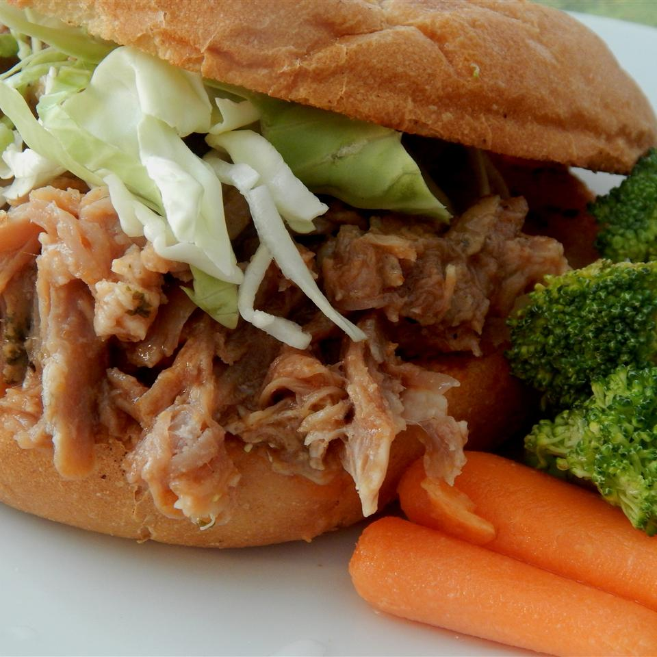

North Carolina Pulled Pork

Description
In North Carolina it means pork, or more precisely smoked pork shoulder, that has been grilled using the indirect
method until it's fall-off-the-bone tender, then pulled into meaty shreds with fingers or a fork.
Ingredients
- 2 pounds pork shoulder roast
- salt and ground black pepper to taste
- ½ cup ketchup
- ½ cup brown sugar
- ⅓ cup red wine vinegar
Directions
- Step 1
-
Preheat slow cooker on Low for 15 minutes.
- Step 2
-
Season pork shoulder with salt and pepper; place pork in preheated slow cooker. Mix ketchup, brown sugar, and vinegar in
a bowl; pour over pork.
- Step 3
-
Cook on Low for 8 hours. Transfer pork to a large platter and slice into 3 to 4 pieces. Shred meat with 2 forks and
return to slow cooker. Continue to cook for 1 hour.